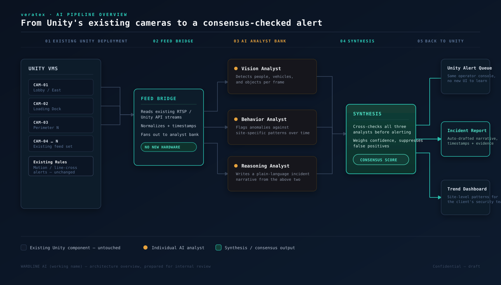

The Solution
A Five-Stage
AI Reasoning Pipeline
The architecture is deliberately additive. Unity's existing components remain untouched; veratex operates in the middle and hands control back to Unity's operator tools at the end.

Why the Analyst Bank Matters
Independent analysis. Verified consensus.
V
Vision Analyst
Detects people, vehicles, and objects per frame—the baseline layer where most AI camera products stop.
B
Behavior Analyst
Flags anomalies against site-specific patterns over time, rather than judging a single frame in isolation.
R
Reasoning Analyst
Creates a plain-language incident narrative so operators receive context, not merely a clip or bounding box.
Synthesis Node: Cross-checks all three analysts, weighs confidence, and suppresses false positives before an alert is issued.
Why This Fits Unity
Designed to strengthen Unity—not compete with it.
- No new hardware or forklift upgrade
- No new operator console or training burden
- Compatible with existing alert queues and workflows
- Complementary to Face-X and LPR-X
- Auto-drafted, timestamped incident documentation
- Expandable across gaming, hospitality, and enterprise sites